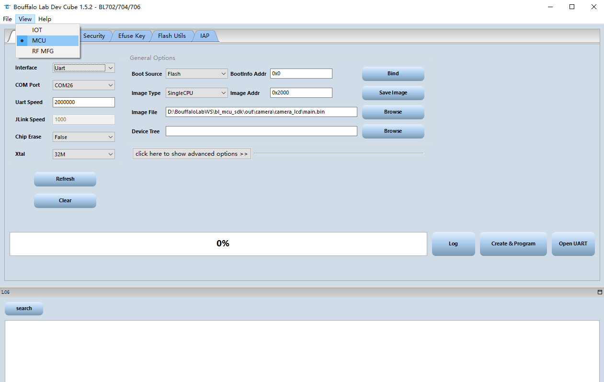
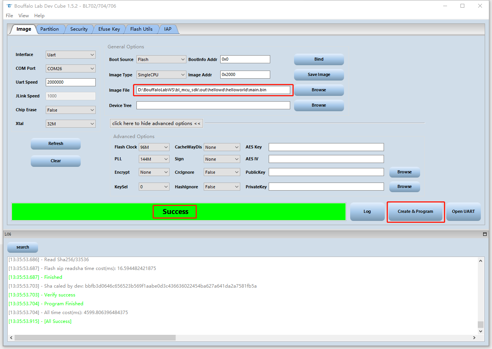
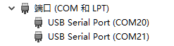
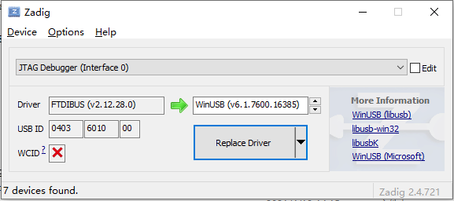
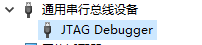

6. BLDevCube 烧录工具指南¶
本文档将简要介绍一下如何使用 Bouffalo Lab Dev Cube 集成开发工具进行代码的烧写，更多详情请参考 BLDevCube 用户手册
6.1. 下载安装 Bouffalo Lab Dev Cube 工具¶
- 从博流智能开发者社区下载适合您操作系统的版本，下载地址：https://dev.bouffalolab.com/download ，从这里可以获取到最新版本工具
- 没有注册开发者账号的用户，可以点击开发者入口，使用
guest用户进入
- 没有注册开发者账号的用户，可以点击开发者入口，使用
- 下载完成后，解压后即可使用
6.2. 配置工具下载方式¶
- 双击解压后文件夹的
BLDevCube.exe, 在Chip Selection对话框中，在Chip Type的下拉框中，选择您要开发的对应芯片的型号，点击Finish进入Dev Cube主界面 - 进入主界面后在上方的菜单栏
View标签下选择MCU下载方式，进入 MCU 程序下载主界面

select mcu
- 在
Image标签下Interface栏选择相应的下载方式，根据您的实际物理链接进行选择 Image file栏配置您想要下载的镜像绝对路径地址，可以点击Browse按钮来选择您的 Bin 文件- 点击
click here to show advanced options时，会展开高级镜像配置，通常情况下保持默认配置即可；需要注意的是，Flash Clock会同时影响到 Flash 和 PSRAM 的时钟频率，在需要使用 PSRAM 的情况下可以适当提高该时钟频率以获得更好的性能
6.2.1. 使用 UART 下载程序¶
COM Port栏用于使用 UART 进行下载时，选择与芯片连接的 COM 口号，可以点击 Refresh 按钮进行 COM 号的刷新Uart Speed栏用于使用 UART 下时，配置合适的波特率，默认 2M- 下载前请确保硬件配置正确：
- 使用
Type-C USB数据线 orMini USB数据线连接到开发板上对应的 USBType-C接口 orMini接口上。 - 按下开发板上的
Boot键，不要释放 - 按下开发板上的
RST键，此时已经进入Boot ROM，可以释放两个按键 - 这时就可以从
Bouffalo Lab Dev Cube中看到相应的串口COM号，如没有出现，请点击Refresh按钮刷新一下
- 使用
- 在正确完成上述配置后，点击
Create&Program按钮进行下载 - 下载成功后即可看到状态栏变成绿色并显示
Success

download success!
6.2.2. 使用 Openocd 下载程序¶
使用 openocd 下载程序与使用串口下载时工具配置基本相同，只需要将
Interface切换成Openocd即可硬件连接需要更改为支持 Openocd 的调试器连接（本教程以 Sipeed RV Debugger 为例）：
- 首先将 RV 调试器连接到电脑的 USB 接口，打开设备管理器，会发现调试器被识别为两个串口（注：不是开发板上的串口）
- 从 sipeed 下载
zadig-2.4替换驱动程序。下载地址：http://dl.sipeed.com/MAIX/tools/sipeed-rv-debugger/zadig-2.4.exe
- 从 sipeed 下载
- 下载好双击打开
zadig-2.4.exe，选择 Options 勾选 List All Devices.
- 下载好双击打开
- 找到 JTAG Debugger(Interface 0)，然后选择替换的驱动为 WinUSB 点击 Replace Driver 替换
- 再次打开设备管理器， 看到其中一个串口被替换成通用串行总线设备就说明安装成功
- 6.将调试器的 JTAG 引脚与开发板的 JTAG 引脚连接起来
在正确完成上述配置后，点击
Create&Program按钮进行下载下载成功后即可看到状态栏变成绿色并显示
Success
6.2.3. 使用 Jlink 下载程序¶
- 使用 Jlink 下载程序与使用 Openocd 下载时工具配置基本相同，只需要将
Interface切换成Jlink即可 - 硬件连接需要更改为使用 Jlink 连接（本教程以 Jlink V11 为例，建议使用 Jlink V10 以上版本）：
- 首先从 Segger 官网下载合适的 Jlink 驱动程序并安装
- 将 Jlink 调试器连接到电脑的 USB 接口
- 将 JLink 调试器的 JTAG 引脚与开发板的 JTAG 引脚连接起来
- 在正确完成上述配置后，点击
Create&Program按钮进行下载 - 下载成功后即可看到状态栏变成绿色并显示
Success